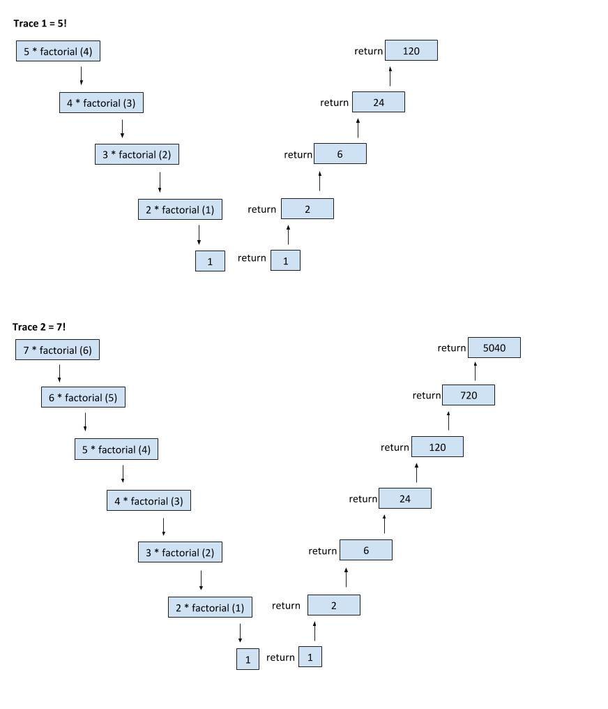
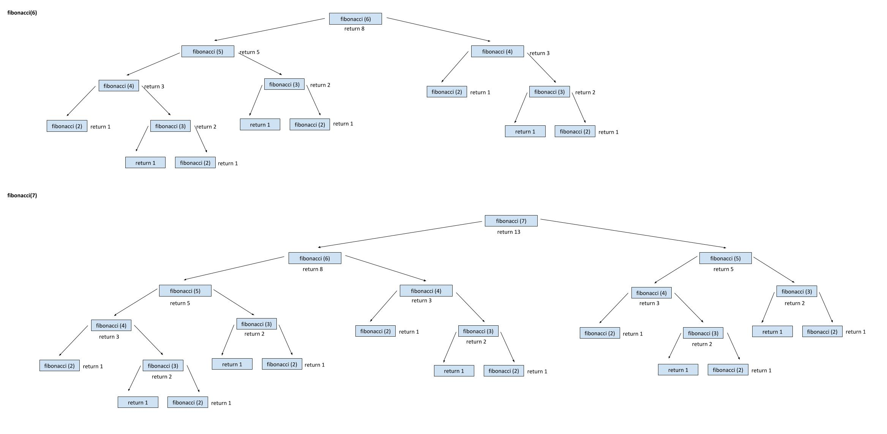

RECURSION
RECURSION
Recursion is a way of solving problems by repeating an algorithm until you reach a base case, which is a condition that terminates the recursive calls. The output is the combination of all the results of each iteration through the algorithm. You must meet three pieces of criteria to use a recursive solution: a way to break down the problem into smaller elements, a way to deal with the endpoint, and a way to resolve the problem based off the smaller elements. In computer programming, implementing recursion is done through the use of recursive methods.
RECURSIVE METHODS
A recursive method is a method that class itself over and over again until a condition is met. Each time a call to the recursive method is made, it adds the latest call to the top of the call stack. Therefore when the method actually executes, it executes starting from the top of the stack, not the bottom. When you use a recursive method, there is one thing you need to include in your method. You must include a base case, to terminate the recursive call. If there is no base case, the method will continue to call itself forever. The base case determines when to stop the recursive calls. Below is an example of factorial, which is a common type of recursive method.
public int factorial (int n) {
//n == 0 is the base case
if (n == 0)
return 1;
else
//the method is called until the base case is reached
return (n * factorial (n - 1));
}
TRACING A RECURSIVE METHOD
 DIFFERENT TYPES RECURSIVE METHODS
TAIL RECURSION
Tail recursion is when the method call is the last line within the method. This means that the last line inside the method is the recursive call. In most cases, the method call will be returned. An example of tail recursion is the factorial method above. The return statement that calls the method, is the last line in the method.
MUTUTAL RECURSION
Mutual recursion is when two methods alternate calling each other. The first method calls the second method, and the second method calls the first method. This is continued until the base case is reached. At least one method must contain the base case to stop the recursive calls.
//first method
public int one (int n) {
//n == 0 is the base case
if (n <= 1)
return n;
else
//the second method is called until the base case is reached
return two(n);
}
//second method
public int two (int x) {
//first method is called
return one (x / 2);
}
DISADVANTAGES OF RECURSION
- Every time the recursive method is called, space is required for its parameters and local variables. Space is needed for the stack, making a recursive method need more space based off of the number of calls made.
- When a recursive method is called, it executes multiple functions that add to the amount of time needed.
SAMPLE PROBLEM
The code below is an example that uses recursive methods to solve problems. This is the Maze Finder program. It traverses a 2D maze array to find if there's a possible path to exit the maze. It finds possible entrances then finds paths to exit the maze. It returns true if there is a possible path to exit for each entrance and returns false if there is no possible path to exit. The entrance can be at any spot at index 0 and the exit can be at any spot at index 4.
import java.awt.*;
public class MazeFinder {
//constructor
public MazeFinder ()
{
}
//calls the function to find possible exits
public void start () {
int[][] mazeArr = {{0,0,1,1,1},
{1,0,1,1,1},
{1,0,1,1,1},
{1,0,0,0,0},
{1,1,1,1,1}};
findEntrance (mazeArr);
}
//resets the position of the maze
private int[][] resetMaze () {
int [][] originalMazeArr = {{0,0,1,1,1},
{1,0,1,1,1},
{1,0,1,1,1},
{1,0,0,0,0},
{1,1,1,1,1}};
return originalMazeArr;
}
//gets the values of the maze
private int getMazeValue(int[][]maze, int x, int y) {
return maze[x][y];
}
//marks indicies that were already passed
public void markSpot (int[][]maze, int x, int y) {
maze[x][y]=2;
}
//finds the possible entrances
public void findEntrance (int[][]maze) {
for (int i = 0; i < 5; i++) {
if (maze[0][i] == 0) { //if entrance is found at a row index 0
System.out.println(solveMaze (maze, 0, i));
maze = resetMaze();
}
}
for (int i = 1; i < 5; i++) {
if (maze[i][0] == 0) { //if entrance is found at a column index 0
System.out.println(solveMaze (maze,i,0));
maze = resetMaze();
}
}
}
//checks if the coordinates are valid
private boolean isValid (int[][]maze, int xCoord, int yCoord) {
if (xCoord >= 0 && xCoord < 5 && yCoord >= 0 && yCoord < 5) {
if (getMazeValue(maze, xCoord,yCoord) == 0) {
return true;
}
}
return false;
}
//sees whether you cna exit the maze or not
private boolean solveMaze (int[][]maze, int x, int y) {
boolean exitPossible = false;
if (isValid (maze, x, y) == true) {
markSpot(maze, x,y);
if (x == 4 || y == 4) {
exitPossible = true; //a path has been found
}
else {
exitPossible = solveMaze (maze, x+1, y);//checks right
if (exitPossible == false)
exitPossible = solveMaze (maze, x, y-1);//checks down
if (exitPossible == false)
exitPossible = solveMaze (maze, x, y+1);//checks up
if (exitPossible == false)
exitPossible = solveMaze (maze, x-1, y);//checks left
}
}
return exitPossible;
}
//main method calls the start method
public static void main (String[] args) {
MazeFinder a = new MazeFinder ();
a.start ();
}
}